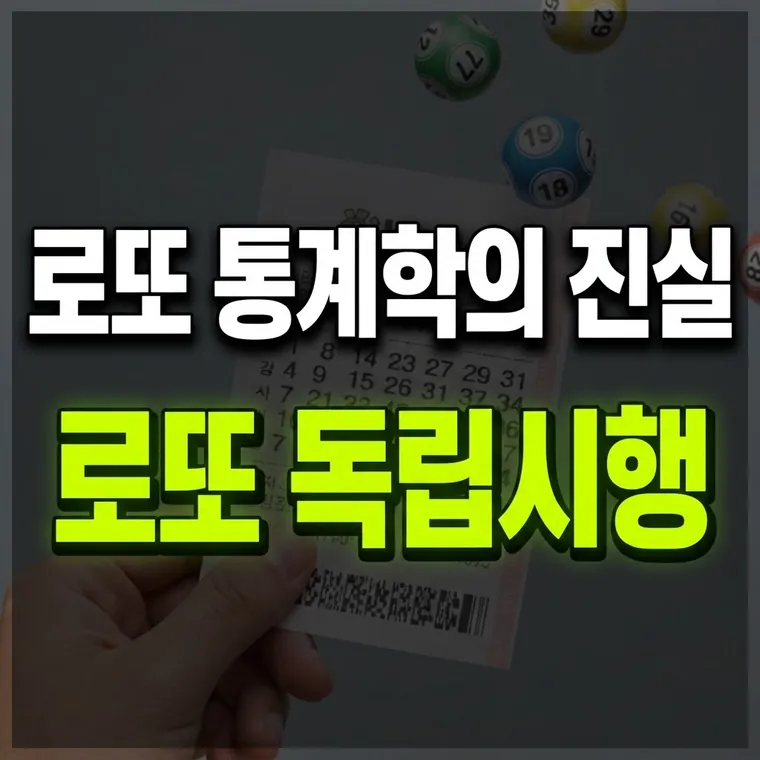

독립시행이란 무엇인가? 로또 번호 추첨에 적용되는 확률 통계학의 핵심 법칙
독립시행은 앞선 결과가 다음 결과의 확률에 영향을 주지 않는다는 뜻입니다. 로또도 매주 새로 추첨하므로 지난주에 나온 번호나 오래 안 나온 번호나 당첨 확률은 814만 분의 1로 같습니다.

로또 번호 추첨과 사람들의 오해, 그리고 '독립시행'
로또 추첨 방송을 매주 지켜보거나 번호를 분석하다 보면 누구나 한 번쯤 "이번 주는 지난주에 안 나온 번호가 대거 나오지 않을까?", 혹은 "최근 5주 동안 한 번도 안 나왔으니 이번에는 나올 확률이 훨씬 높겠지?"라는 생각을 해보게 됩니다.
하지만 확률 통계학의 관점에서 바라보면 이러한 생각은 아주 대표적인 착각 중 하나입니다. 수학과 통계학에서 말하는 '독립시행(Independent Trials)'의 개념을 이해하면, 매주 진행되는 로또 추첨이 이전 회차의 결과와 완전히 무관하게 진행된다는 사실을 명확히 알 수 있습니다.
이번 글에서는 독립시행의 기본 개념이 무엇이며, 왜 로또 번호 추첨에 이 법칙이 적용되는지, 그리고 우리가 흔히 빠지는 통계적 오류가 무엇인지 자세히 살펴보겠습니다.
독립시행의 수학적 정의와 쉬운 이해
독립시행이란 확률론에서 두 개 이상의 사건이 서로에게 아무런 영향을 주지 않는 경우를 뜻합니다. 즉, 먼저 일어난 사건의 결과가 나중에 일어날 사건의 확률에 어떠한 변동도 일으키지 않는 상태를 말합니다.
가장 대표적이고 이해하기 쉬운 예시가 바로 '동전 던지기'와 '주사위 던지기'입니다.
- 동전 던지기: 동전을 던져서 앞면이 나왔다고 가정해 봅시다. 그렇다면 다음에 동전을 다시 던졌을 때 뒷면이 나올 확률은 얼마일까요? 여전히 50%입니다. 앞서 앞면이 나왔다는 사실은 다음 던지기 결과에 아무런 영향을 주지 않습니다.
- 주사위 던지기: 주사위를 던져서 숫자 6이 연속으로 세 번 나왔다고 하더라도, 네 번째 던졌을 때 또다시 6이 나올 확률은 여전히 6분의 1(약 16.7%)로 동일합니다. 주사위에는 기억력이 없기 때문입니다.
로또 추첨기 안의 공들도 마찬가지입니다. 추첨기에 들어가는 45개의 공은 매주 새롭게 섞이며, 기계는 지난주에 어떤 번호가 당첨되었는지 기억하지 못합니다. 매주 진행되는 추첨은 완전히 독립된 새로운 시행입니다.
로또 6/45 추첨에 적용되는 독립시행의 원리
많은 이용자가 오해하는 부분 중 하나는 "로또 공의 총 개수가 한정되어 있으니, 전체적인 장기 통계를 맞추기 위해 안 나온 번호가 나올 차례가 되었다"는 이른바 '보상 심리' 또는 '균형의 법칙'입니다. 이를 학술적으로는 '도박사의 오류(Gambler's Fallacy)'라고 부릅니다.
로또 6/45의 수학적 구조를 살펴보면 다음과 같은 사실을 알 수 있습니다.
- 1부터 45까지의 숫자 중에서 6개를 뽑는 조합의 수는 총 8,145,060개입니다.
- 매주 추첨에서 특정 번호 6개가 뽑힐 확률은 회차와 관계없이 언제나 814만 분의 1로 정확히 동일합니다.
- 지난 1,000회 동안 단 한 번도 나오지 않은 번호라 하더라도, 다가오는 추첨에서 그 번호가 뽑힐 확률이 다른 번호보다 높아지는 것은 아닙니다. 모든 번호는 매 회차 공평하게 같은 확률에서 출발합니다.
따라서 특정 번호가 오래 안 나왔다고 해서 그 번호가 '당첨될 때가 되었다'고 믿는 것은 통계학적 사실과 거리가 멉니다.
번호를 고를 때 알아둘 점
독립시행을 이해하면 번호를 고르거나 로또 정보를 볼 때 속지 않을 수 있습니다.
- 단정하는 말 조심하기: "이월수 분석을 통해 다음 번호를 맞힐 수 있다"는 식의 말은 사실과 다릅니다. 확률 통계학상 모든 회차는 독립시행이므로 과거 기록이 미래에 영향을 주지 않습니다.
- 독립시행과 큰수의 법칙 구분하기: 큰수의 법칙(Law of Large Numbers)은 표본의 수가 매우 커질 때 통계적 확률이 수학적 확률에 가까워진다는 뜻이지, 단기적인 다음 회차의 결과를 예측해 준다는 의미가 아닙니다.
- 복권은 확률 게임임을 기억하기: 복권은 어디까지나 확률적 게임입니다. 수학적 무작위성을 이해하고 가벼운 오락이나 건전한 취미로 접근하는 것이 좋습니다.
번호를 고르는 기준이 무엇이든 매 회차의 확률은 같다는 점만 기억하셔도 불필요한 기대를 줄일 수 있습니다.
· 독립시행이란 앞선 사건의 결과가 다음 사건의 확률에 아무런 영향을 주지 않는 수학적 법칙입니다.
· 로또 추첨 역시 매회 독립적으로 이루어지므로, 지난주에 나온 번호나 오래 안 나온 번호나 당첨 확률은 언제나 같습니다.
· "오래 안 나왔으니 이제 나올 때가 되었다"는 생각은 대표적인 도박사의 오류이며, 수학적 근거가 없습니다.
이 글의 기준과 예시는 2026년 10월 기준입니다. 법령이나 제도가 바뀌면 내용이 달라질 수 있으니, 신청·신고·계약 전에는 해당 기관에서 최신 기준을 확인하세요. 계산 결과와 설명은 참고용입니다.
🔮 다음 글 예고
다음 글에서는 자동선택·반자동·수동선택에 따라 당첨 확률이 정말 달라지는지 다룹니다.